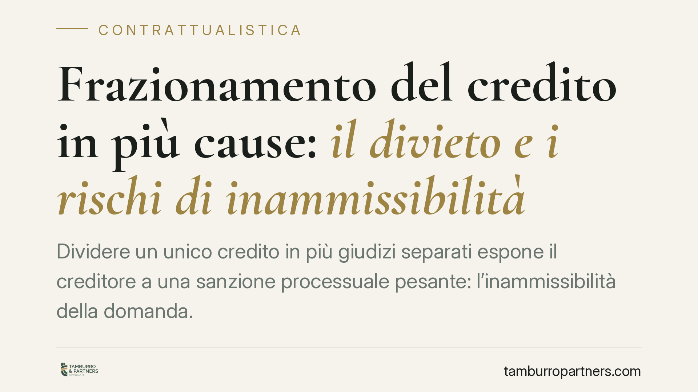

Frazionamento del credito in più cause: il divieto e i rischi di inammissibilità
Dividere un unico credito in più giudizi separati espone il creditore a una sanzione processuale pesante: l'inammissibilità della domanda. Il principio, consolidato dalle Sezioni Unite, continua a orientare i giudici di merito. Vediamo quando il frazionamento è vietato, quali sono i parametri costituzionali e sostanziali di riferimento e come impostare correttamente l'azione per evitare di vedersi chiudere la porta in aula.

Il caso e il principio
Un creditore vanta una somma complessiva nei confronti del debitore. Anziché chiederla in un unico processo, la spezza in più cause distinte: una parte oggi, un'altra domani. Il risultato? La domanda rischia di essere dichiarata inammissibile, cioè chiusa senza esame del merito.
Si parla di *frazionamento* (o parcellizzazione) del credito quando una pretesa unitaria viene artificialmente divisa in più domande giudiziali autonome. La giurisprudenza, da anni, considera questa pratica contraria ai doveri di correttezza e buona fede.
> Nota redazionale: eventuali pronunce di merito recenti vanno sempre verificate negli estremi esatti (numero, sezione, anno) prima di farne un uso argomentativo. In questo contributo ci atteniamo al quadro giurisprudenziale di legittimità, stabile e verificabile.
Inquadramento normativo
Il divieto di frazionamento non nasce da una singola norma processuale, ma dall'intreccio tra principi costituzionali e regole di diritto sostanziale.
Sul piano sostanziale, rilevano l'art. 1175 c.c. (comportamento secondo correttezza) e l'art. 1375 c.c. (esecuzione del contratto secondo buona fede). Il creditore che moltiplica i processi aggrava la posizione del debitore, costretto a difendersi più volte su una vicenda unitaria.
Sul piano costituzionale, il riferimento corretto è duplice e va tenuto distinto:
- l'art. 2 Cost. fonda il dovere di solidarietà, da cui discende la buona fede nei rapporti obbligatori;
- l'art. 111 Cost. sancisce il giusto processo e la sua ragionevole durata, messi a rischio dalla moltiplicazione artificiosa dei giudizi.
È importante non confondere i parametri: l'art. 24 Cost. tutela il diritto di agire e difendersi in giudizio, ma non è il fondamento del "giusto processo", che è presidiato dall'art. 111 Cost.
L'evoluzione giurisprudenziale
Il leading case è rappresentato dalle Sezioni Unite n. 23726/2007, che hanno vietato la parcellizzazione di un credito unitario: chi può chiedere il tutto in un solo processo non può frammentarlo per ottenere vantaggi processuali o moltiplicare le occasioni di recupero.
Le Sezioni Unite n. 4090/2017 hanno poi precisato la disciplina per i crediti distinti ma riferibili a un medesimo rapporto di durata (si pensi a più canoni o a più rate). In questi casi il frazionamento non è vietato in modo assoluto: diventa inammissibile solo quando non risponde a un interesse oggettivamente apprezzabile del creditore a procedere in modo separato.
Si è così passati da un divieto rigido a un bilanciamento: non ogni pluralità di domande è illecita, ma lo è quella priva di una ragione concreta e verificabile, che si traduce in un aggravio ingiustificato per il debitore e per il sistema giudiziario.
Quando il frazionamento è vietato
Tre criteri orientano il giudizio:
- credito unitario: deriva da un'unica operazione economica o da un unico fatto illecito;
- medesimo fatto costitutivo: le domande poggiano sulla stessa causa petendi, cioè sullo stesso titolo;
- assenza di un interesse oggettivamente apprezzabile a frazionare: non basta una convenienza soggettiva del creditore.
Quando questi elementi ricorrono, la domanda frazionata è esposta all'inammissibilità.
Inammissibilità, non rigetto nel merito
La distinzione è tecnica ma decisiva. Il rigetto nel merito significa che il giudice ha esaminato la pretesa e l'ha ritenuta infondata. L'inammissibilità significa invece che il giudice non entra affatto nel merito: dichiara che la domanda, così proposta, non può essere esaminata.
Le conseguenze pratiche cambiano: l'inammissibilità colpisce il modo in cui l'azione è stata impostata, non la fondatezza del diritto. Ma per il creditore il danno è concreto, perché può compromettere il recupero.
Cosa fare in concreto
- Verifica l'unitarietà del credito prima di agire: ricostruisci se le pretese derivano da un'unica operazione o da un unico fatto, oppure da rapporti distinti.
- Concentra in un solo giudizio tutte le pretese riconducibili allo stesso titolo, salvo che esista una ragione concreta per separarle.
- Documenta l'interesse a procedere in modo frazionato, quando esiste: deve essere oggettivo e verificabile, non una mera convenienza.
- Valuta i rapporti di durata con attenzione: più rate o canoni non sempre giustificano cause separate.
- Consigliamo di far esaminare l'impostazione dell'azione da un professionista prima del deposito, per evitare una pronuncia di inammissibilità che vanifica il tempo e i costi.
Disclaimer
Contributo informativo a cura di Tamburro & Partners - Avv. Giuseppe Tamburro. Non costituisce parere legale.
Ogni contratto ha il suo equilibrio.
Se vuoi una revisione delle clausole o una redazione su misura, scrivi allo studio. Ti rispondiamo entro un giorno lavorativo.